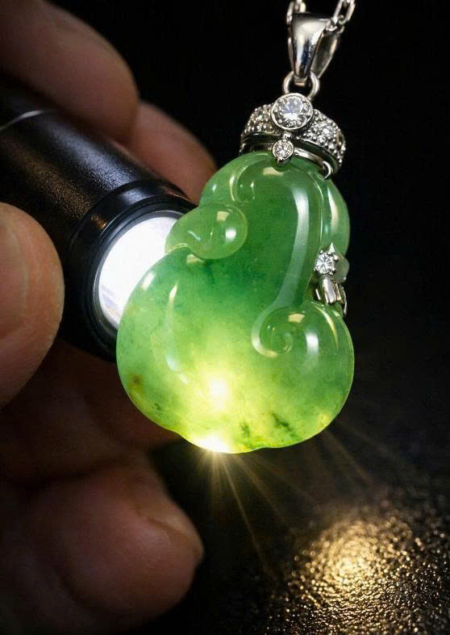
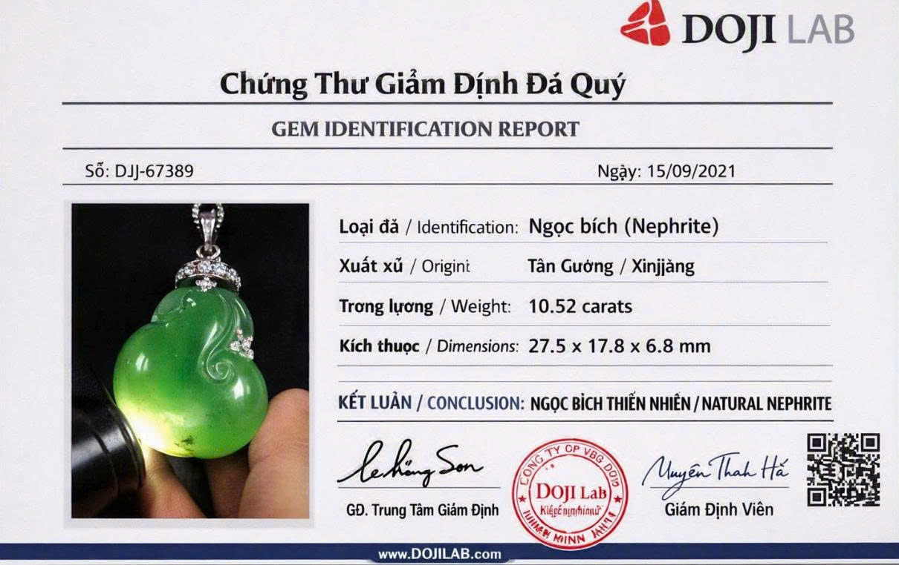

Mặt dây chuyền Như Ý ngọc bích Hòa Điền - Mã số JADE-03
Tác phẩm được điêu khắc thủ công hình Vương trượng Như Ý từ ngọc bích Hòa Điền (Nephrite) vùng Tân Cương. Chất ngọc dầu mỡ (mỡ cừu), bề mặt trơn mịn và phát quang dịu nhẹ.


Bảng thông số kiểm định vật lý
| Tiêu chí kiểm định | Kết quả đo lường thực tế |
|---|---|
| Tên khoáng vật | Ngọc bích Nephrite thiên nhiên |
| Kích thước (Dài x Rộng x Dày) | 27.5 x 17.8 x 6.8 mm |
| Trọng lượng | 10.52 carats |
| Độ cứng Mohs | 6.0 - 6.5 |
| Chiết suất | 1.61 |
| Hiện tượng quang học | Độ thấu quang bán trong, ánh mỡ bóng dầu |